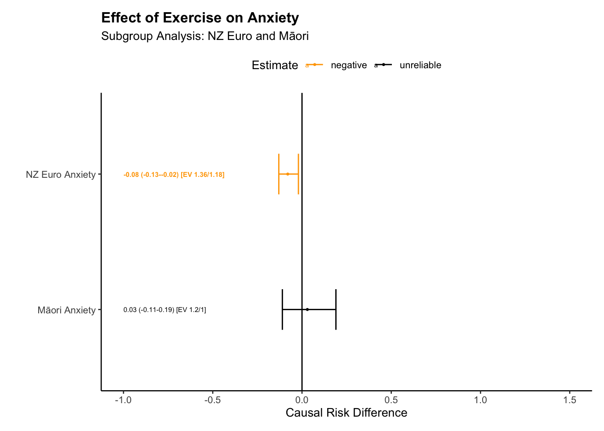
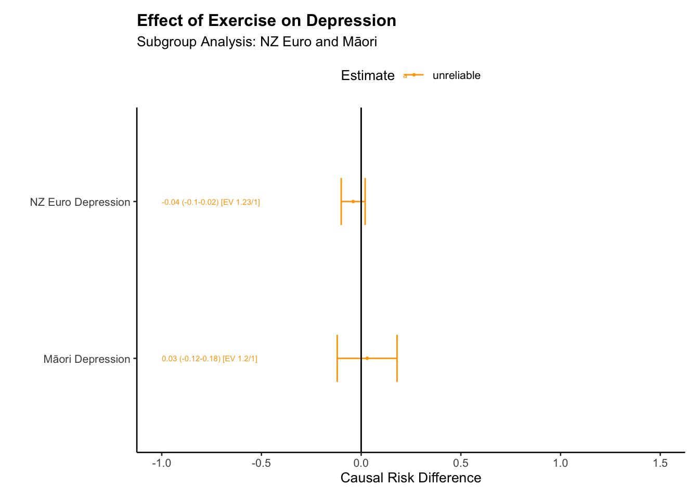

State the Question: is my question clearly stated? If not, state it.
Relevance of the Question: Have I explained its importance? If not, explain.
Subgroup Analysis: Does my question involve a subgroup (e.g., cultural group)? If not, develop a subgroup analysis question.
Causality of the Question: Is my question causal? Briefly explain what this means with reference to the potential outcomes framework.
State how you will use time-series data to address causality.
Define your exposure.
Define your outcome(s)
Explain how the the exposure and outcome is relevant to your question.
Define your causal estimand (see: lecture 9). Hint: it is ATE_g_risk difference = E[Y(1)-(0)|G,L], where G is your multiple-group indicator and L is your set of baseline confounders.
Methods
Consider any ethical implications.
Explain the sample. Provide descriptive statistics
Discuss inclusion criteria.
Discuss how your sample relates to the “source population” (lecture 9.)
Explain NZAVS measures. State the questions used in the items
In your own words describe how the data meet the following assumptions required for causal inference:
Positivity: Can we intervene on the exposure at all levels of the covariates? Use the code I provided to test whether there is change in the exposure from the baseline in the source population(s)
Consistency: Can I interpret what it means to intervene on the exposure?
Exchangeability: Are different versions of the exposure conditionally exchangeable given measured baseline confounders? This requires stating baseline confounders and explaining how they may be related to both the exposure and outcome. As part of this, you must explain why the baseline measure of your exposure and outcome are included as potential confounders.
Note: Unmeasured Confounders: Does previous science suggest the presence of unmeasured confounders? (e.g. childhood exposures that are not measured).
Draw a causal diagram: Have I drawn a causal diagram (DAG) to highlight both measured and unmeasured sources of confounding?
Measurement Error: Have I described potential biases from measurement errors? Return to lecture 11.
State that you do not have missing data in this synthetic dataset, but that ordinarily missing data would need to be handled.
State what your estimator will be. Note I’ve given you the following text to modify:
The Doubly Robust Estimation method for Subgroup Analysis Estimator is a sophisticated tool combining features of both IPTW and G-computation methods, providing unbiased estimates if either the propensity score or outcome model is correctly specified. The process involves five main steps:
Step 1 involves the estimation of the propensity score, a measure of the conditional probability of exposure given the covariates and the subgroup indicator. This score is calculated using statistical models such as logistic regression, with the model choice depending on the nature of the data and exposure. Weights for each individual are then calculated using this propensity score. These weights depend on the exposure status and are computed differently for exposed and unexposed individuals. The estimation of propensity scores is performed separately within each subgroup stratum.
Step 2 focuses on fitting a weighted outcome model, making use of the previously calculated weights from the propensity scores. This model estimates the outcome conditional on exposure, covariates, and subgroup, integrating the weights into the estimation process. Unlike in propensity score model estimation, covariates are included as variables in the outcome model. This inclusion makes the method doubly robust - providing a consistent effect estimate if either the propensity score or the outcome model is correctly specified, thereby reducing the assumption of correct model specification.
Step 3 entails the simulation of potential outcomes for each individual in each subgroup. These hypothetical scenarios assume universal exposure to the intervention within each subgroup, regardless of actual exposure levels. The expectation of potential outcomes is calculated for each individual in each subgroup, using individual-specific weights. These scenarios are performed for both the current and alternative interventions.
Step 4 is the estimation of the average causal effect for each subgroup, achieved by comparing the computed expected values of potential outcomes under each intervention level. The difference represents the average causal effect of changing the exposure within each subgroup.
Step 5 involves comparing differences in causal effects across groups by calculating the differences in the estimated causal effects between different subgroups. Confidence intervals and standard errors for these calculations are determined using simulation-based inference methods (Greifer et al. 2023). This step allows for a comprehensive comparison of the impact of different interventions across various subgroups, while encorporating uncertainty.
State what E-values are and how you will use them to clarify the risk of unmeasured confounding.
Results
Use the scripts I have provided as a template for your analysis.
Propensity Score Reporting: Detail the process of propensity score derivation, including the model used and any variable transformations: e.g.: A ~ x1 + x2 + x3 + .... using logistic regression, all continuous predictors were transformed to z-scores
WeightIt Package Utilisation: Explicitly mention the use of the ‘WeightIt’ package in R, including any specific options or parameters used in the propensity score estimation process (Greifer 2023).
Report if different methods were used to obtain propensity scores, and the reasons behind the choice of methods such as ‘ebal’, ‘energy’, and ‘ps’.
If your exposure is continuous only the ‘energy’ option was used for propensity score estimation.
Subgroup Estimation: Confirm that the propensity scores for subgroups were estimated separately, and discuss how the weights were subsequently combined with the original data.
Covariate Balance: Include a Love plot to visually represent covariate balance on the exposure both before and after weighting. The script will generate these plots.
Weighting Algorithm Statistics: Report the statistics for the weighting algorithms as provided by the WeightIt package, including any measures of balance or fit. The script I gave you will generate this information
Example:
We estimated propensity scores by fitting a model for the exposure A as it is predicted by the set of baseline covariates defined by L. Because we are interested in effect modification by group, we fit different propensity score models for within strata of G using the subgroup command of the WeightIt package. Thus the propensity score is the the probability of receiving a value of a treatment (A=a) conditional on the covariates L, and stratum within G. We compared balance using the following methods of weighting: “ebal” or entropy balancing, “energy” or energy balancing, and “ps” or traditional inverse probability of weighting balancing. Of these methods “ebal” performed the best. Table X and Figure Y present the results of the ebalancing method.
Interpretation of Propensity Scores: we interpret the proposensity scores as yeilding good balance across the exposure conditions.
Outcome Regression Model: Clearly report the type of regression model used to estimate outcome model coefficients (e.g., linear regression, Poisson, binomial), and mention if the exposure was interacted with the baseline covariates. Do not report model coefficients as these have no interpretation. Example
We fit a linear model using maximum likelihood estimation with the outcome Y predicted by the exposure A. We interacted the exposure with all baseline confounders L. Continuous baseline confounders were converted to z-scores, whereas categorical exposures were not. Also interacted with all baseline confounders was a term for the subgroup interactoin. This allowed uas to flexibily fit non-linearities for the modification of the effect of the exposure within levels of the levels of the cultural group strata of interest. We note that model coefficients have no interpretation in this context so are not reported. The remaining steps of Doubly-Robust estimation were performed as outlined in the Method section. We calculated confidence intervals and standard errors, using the clarify package in R, which relies on simulation based inference for these quantities of interest (Greifer et al. 2023)
Report the causal estimates.
ATE contrasts for groups in setting the exposure to for each group in setting level A = a and A = a*
differences between groups in the magnitude of the effects. (ATE_group 1 - ATE_group_2)
Report the E-value: how sensitive are your results to unmeasured confounding? Hint I gave you code that will create a table for you: See here
Consider the following ideas about what to discuss in one’s findings. The order of exposition might be different.
Summary of results: What did you find?
Interpretation of E-values: Interpret the E-values used for sensitivity analysis. State what they represent in terms of the robustness of the findings to potential unmeasured confounding.
Causal Effect Interpretation: What is the interest of the effect, if any, if an effect was observed? Interpret the average causal effect of changing the exposure level within each subgroup, and discuss its relevance to the research question.
Comparison of Subgroups: Discuss how differences in causal effect estimates between different subgroups, if observed, or if not observed, contribute to the overall findings of the study.
Uncertainty and Confidence Intervals: Consider the uncertainty around the estimated causal effects, and interpret the confidence intervals to understand the precision of the estimates.
Generalisability and Transportability: Reflect on the generalizability of the study results to other contexts or populations. Discuss any factors that might influence the transportability of the causal effects found in the study. (Again see lecture 9.)
Assumptions and Limitations: Reflect on the assumptions made during the study and identify any limitations in the methodology that could affect the interpretation of results. State that the implications of different intervention levels on potential outcomes are not analysed.
Theoretical Relevance: How are these findings relevant to existing theories.
Replication and Future Research: Consider how the study could be replicated or expanded upon in future research, and how the findings contribute to the existing body of knowledge in the field.
Real-world Implications: Discuss the real-world implications of the findings, and how they could be applied in policy, practice, or further research.
Example anlaysis (week 10)
Load Libraries
Code
# Before running this source code, make sure to update to the current version of R, and to update all existing packages.# functionssource("https://raw.githubusercontent.com/go-bayes/templates/main/functions/funs.R")# experimental functions (more functions)source("https://raw.githubusercontent.com/go-bayes/templates/main/functions/experimental_funs.R")# If you haven't already, you should have created a folder called "data", in your Rstudio project. If not, download this file, add it to your the folder called "data" in your Rstudio project. # "https://www.dropbox.com/s/vwqijg4ha17hbs1/nzavs_dat_synth_t10_t12?dl=0"
Import data
# This will read the synthetic data into Rstudio. Note that the arrow package allows us to have lower memory demands in the storage and retrieval of data.nzavs_synth <- arrow::read_parquet(here::here("data", "nzavs_dat_synth_t10_t12"))
Find column names
Transform indicators
What is the effect of exercise as measured by the NZAVS exercise scale on (1) depression and (2) anxiety.
# questions are:# kessler_depressed,# # During the last 30 days, how often did you feel so depressed that nothing could cheer you up?# kessler_hopeless,# # During the last 30 days, how often did you feel hopeless?# kessler_nervous,# # During the last 30 days, how often did you feel nervous?# kessler_effort,# # During the last 30 days, how often did you feel that everything was an effort?# kessler_restless,# # During the last 30 days, how often did you feel restless or fidgety ?# kessler_worthless # During the last 30 days, how often did you feel worthless?dt_start <- nzavs_synth %>%arrange(id, wave) %>%rowwise() %>%mutate(# see week 10 appendix 1 for a detailed explanation of how we obtain these 2 x factorskessler_latent_depression =mean(c(kessler_depressed, kessler_hopeless, kessler_effort),na.rm =TRUE ),kessler_latent_anxiety =mean(c( kessler_effort, kessler_nervous, kessler_restless ), na.rm =TRUE) ) |>ungroup() |># Coarsen 'hours_exercise' into categoriesmutate(hours_exercise_coarsen =cut( hours_exercise,# Hours spent exercising/ physical activitybreaks =c(-1, 3, 8, 200),labels =c("inactive","active","very_active"),# Define thresholds for categorieslevels =c("(-1,3]", "(3,8]", "(8,200]"),ordered =TRUE ) ) |># Create a binary 'urban' variable based on the 'rural_gch2018' variablemutate(urban =factor(ifelse( rural_gch2018 =="medium_urban_accessibility"|# Define urban condition rural_gch2018 =="high_urban_accessibility","urban",# Label 'urban' if condition is met"rural"# Label 'rural' if condition is not met ) ))
Inspect your data
Code
# do some checkslevels(dt_start$hours_exercise_coarsen)table(dt_start$hours_exercise_coarsen)max(dt_start$hours_exercise)min(dt_start$hours_exercise)# checks# justification for transforming exercise" has a very long tailhist(dt_start$hours_exercise, breaks =1000)# consider only those cases below < or = to 20hist(subset(dt_start, hours_exercise <=20)$hours_exercise)hist(as.numeric(dt_start$hours_exercise_coarsen))
Investigate assumption of positivity:
Recall the positive assumption:
Positivity: Can we intervene on the exposure at all levels of the covariates?
These are the data by wave, but they don’t track who changed.
# select only the baseline year and the exposure year. That will give us change in the exposure. ()dt_exposure <- dt_start |># select baseline year and exposure yearfilter(wave =="2018"| wave =="2019") |># select variables of interestselect(id, wave, hours_exercise_coarsen, eth_cat) |># the categorical variable needs to be numeric for us to use msm package to investigate changemutate(hours_exercise_coarsen_n =as.numeric(hours_exercise_coarsen)) |>droplevels()# checkdt_exposure |>tabyl(hours_exercise_coarsen_n, eth_cat, wave )
I’ve written a function called transition_table that will help us assess change in the exposure at the individual level.
# consider people going from active to vary activeout <- msm::statetable.msm(round(hours_exercise_coarsen_n, 0), id, data = dt_exposure)# for a function I wrote to create state tablesstate_names <-c("Inactive", "Somewhat Active", "Active", "Extremely Active")# transition tabletransition_table(out, state_names)
$explanation
[1] "The table presents a transition matrix that describes stability and movement between the treatment from the baseline wave to the treatment wave. Entries on the diagonal (in bold) indicate the number of individuals who stayed in their initial state. In contrast, the off-diagonal shows the transitions from the initial state (bold) to another state the following wave (off diagnal). A cell located at the intersection of row $i$ and column $j$, where $i \neq j$, presents the count of individuals moving from state $i$ to state $j$."
$table
| From | Inactive | Somewhat Active | Active |
|:---------------:|:--------:|:---------------:|:-------:|
| Inactive | **2186** | 1324 | 295 |
| Somewhat Active | 1019 | **2512** | 811 |
| Active | 204 | 668 | **981** |
Next consider Māori only
# Maori onlydt_exposure_maori <- dt_exposure |>filter(eth_cat =="māori")out_m <- msm::statetable.msm(round(hours_exercise_coarsen_n, 0), id, data = dt_exposure_maori)# with this little support we might consider parametric modelst_tab_m<-transition_table( out_m, state_names)#interpretationcat(t_tab_m$explanation)
The table presents a transition matrix that describes stability and movement between the treatment from the baseline wave to the treatment wave. Entries on the diagonal (in bold) indicate the number of individuals who stayed in their initial state. In contrast, the off-diagonal shows the transitions from the initial state (bold) to another state the following wave (off diagnal). A cell located at the intersection of row $i$ and column $j$, where $i
eq j$, presents the count of individuals moving from state $i$ to state $j$.
print(t_tab_m$table)
| From | Inactive | Somewhat Active | Active |
|:---------------:|:--------:|:---------------:|:------:|
| Inactive | **187** | 108 | 24 |
| Somewhat Active | 92 | **188** | 61 |
| Active | 28 | 58 | **75** |
# filter eurodt_exposure_euro <- dt_exposure |>filter(eth_cat =="euro")# model changeout_e <- msm::statetable.msm(round(hours_exercise_coarsen_n, 0), id, data = dt_exposure_euro)# creat transition table.t_tab_e <-transition_table( out_e, state_names)#interpretationcat(t_tab_e$explanation)
The table presents a transition matrix that describes stability and movement between the treatment from the baseline wave to the treatment wave. Entries on the diagonal (in bold) indicate the number of individuals who stayed in their initial state. In contrast, the off-diagonal shows the transitions from the initial state (bold) to another state the following wave (off diagnal). A cell located at the intersection of row $i$ and column $j$, where $i
eq j$, presents the count of individuals moving from state $i$ to state $j$.
# tableprint(t_tab_e$table)
| From | Inactive | Somewhat Active | Active |
|:---------------:|:--------:|:---------------:|:-------:|
| Inactive | **1843** | 1136 | 259 |
| Somewhat Active | 870 | **2208** | 712 |
| Active | 167 | 583 | **863** |
Overall we find evidence for change in the exposure variable. This suggest that we are ready to proceed with the next step of causal estimation.
Draw Dag
\usetikzlibrary{positioning}\usetikzlibrary{shapes.geometric}\usetikzlibrary{arrows}\usetikzlibrary{decorations}\tikzstyle{Arrow} = [->, thin, preaction = {decorate}]\tikzset{>=latex}\begin{tikzpicture}[{every node/.append style}=draw]\node [rectangle, draw=white] (U) at (0, 0) {U};\node [rectangle, draw=black, align=left] (L) at (2, 0) {t0/L \\t0/A \\t0/Y};\node [rectangle, draw=white] (A) at (4, 0) {t1/A};\node [ellipse, draw=white] (Y) at (6, 0) {t2/Y};\draw [-latex, draw=black] (U) to (L);\draw [-latex, draw=black] (L) to (A);\draw [-latex, draw=red, dotted] (A) to (Y);\draw [-latex, bend left=50, draw =black] (L) to (Y);\draw [-latex, bend right=50, draw =black, dotted] (U) to (Y);\draw [-latex, bend left=50, draw =black, dotted] (U) to (A);\end{tikzpicture}
Figure 1: Causal graph: three-wave panel design
Create wide data frame for analysis
I’ve written a function
############## ############## ############## ############## ############## ############## ############## ############ #### #### CREATE DATA FRAME FOR ANALYSIS #### #### ################## ############## ######## ####################### ############## ############## ############## ############## ############## ############# ########## I have created a function that will put the data into the correct shape. Here are the steps.# Step 1: choose baseline variables (confounders). here we select standard demographic variablees plus personality variables.# Note again that the function will automatically include the baseline exposure and basline outcome in the baseline variable confounder set so you don't need to include these. # here are some plausible baseline confoundersbaseline_vars =c("edu","male","eth_cat","employed","gen_cohort","nz_dep2018","nzsei13","partner","parent","pol_orient","urban","agreeableness","conscientiousness","extraversion","honesty_humility","openness","neuroticism","modesty","religion_identification_level")## Step 2, select the exposure variable. This is the "cause"exposure_var =c("hours_exercise_coarsen")## step 3. select the outcome variable. These are the outcomes.outcome_vars_reflective =c("kessler_latent_anxiety","kessler_latent_depression")# the function "create_wide_data" should be in your environment.# If not, make sure to run the first line of code in this script once more. You may ignore the warnings. or uncomment and run the code below# source("https://raw.githubusercontent.com/go-bayes/templates/main/functions/funs.R")dt_prepare <-create_wide_data(dat_long = dt_start,baseline_vars = baseline_vars,exposure_var = exposure_var,outcome_vars = outcome_vars_reflective )# ignore warning
Descriptive table
Code
# I have created a function that will allow you to take a data frame and# create a tablebaseline_table(dt_prepare, output_format ="markdown")# but it is not very nice. Next up, is a better table
# get data into shapedt_new <- dt_prepare %>%select(starts_with("t0")) %>%rename_all( ~ stringr::str_replace(., "^t0_", "")) %>%mutate(wave =factor(rep("baseline", nrow(dt_prepare)))) |> janitor::clean_names(case ="screaming_snake")# create a formula stringbaseline_vars_names <- dt_new %>%select(-WAVE) %>%colnames()table_baseline_vars <-paste(baseline_vars_names, collapse ="+")formula_string_table_baseline <-paste("~", table_baseline_vars, "|WAVE")table1::table1(as.formula(formula_string_table_baseline),data = dt_new,overall =FALSE)
baseline (N=10000)
EDU
Mean (SD)
5.85 (2.59)
Median [Min, Max]
6.96 [-0.128, 10.1]
MALE
Male
3905 (39.1%)
Not_male
6095 (61.0%)
ETH_CAT
euro
8641 (86.4%)
māori
821 (8.2%)
pacific
190 (1.9%)
asian
348 (3.5%)
EMPLOYED
Mean (SD)
0.836 (0.370)
Median [Min, Max]
1.00 [0, 1.00]
GEN_COHORT
Gen_Silent: born< 1946
166 (1.7%)
Gen Boomers: born >= 1946 & b.< 1965
4257 (42.6%)
GenX: born >=1961 & b.< 1981
3493 (34.9%)
GenY: born >=1981 & b.< 1996
1883 (18.8%)
GenZ: born >= 1996
201 (2.0%)
NZ_DEP2018
Mean (SD)
4.46 (2.65)
Median [Min, Max]
4.01 [0.835, 10.1]
NZSEI13
Mean (SD)
57.0 (16.1)
Median [Min, Max]
61.0 [9.91, 90.1]
PARTNER
Mean (SD)
0.795 (0.404)
Median [Min, Max]
1.00 [0, 1.00]
PARENT
Mean (SD)
0.706 (0.456)
Median [Min, Max]
1.00 [0, 1.00]
POL_ORIENT
Mean (SD)
3.47 (1.40)
Median [Min, Max]
3.09 [0.862, 7.14]
URBAN
rural
1738 (17.4%)
urban
8262 (82.6%)
AGREEABLENESS
Mean (SD)
5.36 (0.986)
Median [Min, Max]
5.48 [0.977, 7.13]
CONSCIENTIOUSNESS
Mean (SD)
5.19 (1.03)
Median [Min, Max]
5.28 [0.938, 7.16]
EXTRAVERSION
Mean (SD)
3.85 (1.21)
Median [Min, Max]
3.80 [0.861, 7.07]
HONESTY_HUMILITY
Mean (SD)
5.52 (1.12)
Median [Min, Max]
5.71 [1.14, 7.15]
OPENNESS
Mean (SD)
5.06 (1.10)
Median [Min, Max]
5.12 [0.899, 7.15]
NEUROTICISM
Mean (SD)
3.41 (1.17)
Median [Min, Max]
3.31 [0.860, 7.08]
MODESTY
Mean (SD)
6.07 (0.860)
Median [Min, Max]
6.24 [2.17, 7.17]
RELIGION_IDENTIFICATION_LEVEL
Mean (SD)
2.19 (2.07)
Median [Min, Max]
1.00 [1.00, 7.00]
HOURS_EXERCISE_COARSEN
inactive
3805 (38.1%)
active
4342 (43.4%)
very_active
1853 (18.5%)
KESSLER_LATENT_ANXIETY
Mean (SD)
1.16 (0.719)
Median [Min, Max]
1.03 [-0.0800, 4.03]
KESSLER_LATENT_DEPRESSION
Mean (SD)
0.744 (0.686)
Median [Min, Max]
0.646 [-0.0871, 4.02]
We need to do some more data wrangling, alas! Data wrangling is the majority of data analysis. The good news is that R makes wrangling relatively straightforward.
mutate(id = factor(1:nrow(dt_prepare))): This creates a new column called id that has unique identification factors for each row in the dataset. It ranges from 1 to the number of rows in the dataset.
The next mutate operation is used to convert the t0_eth_cat, t0_urban, and t0_gen_cohort variables to factor type, if they are not already.
The filter command is used to subset the dataset to only include rows where the t0_eth_cat is either “euro” or “māori”. The original dataset includes data with four different ethnic categories. This command filters out any row not related to these two groups.
ungroup() ensures that there’s no grouping in the dataframe.
The mutate(across(where(is.numeric), ~ scale(.x), .names = "{col}_z")) step standardizes all numeric columns in the dataset by subtracting the mean and dividing by the standard deviation (a z-score transformation). The resulting columns are renamed to include “_z” at the end of their original names.
The select function is used to keep only specific columns: the id column, any columns that are factors, and any columns that end in “_z”.
The relocate functions re-order columns. The first relocate places the id column at the beginning. The next three relocate functions order the rest of the columns based on their names: those starting with “t0_” are placed before “t1_” columns, and those starting with “t2_” are placed after “t1_” columns.
droplevels() removes unused factor levels in the dataframe.
Finally, skimr::skim(dt) will print out a summary of the data in the dt object using the skimr package. This provides a useful overview of the data, including data types and summary statistics.
This function seems to be part of a data preparation pipeline in a longitudinal or panel analysis, where observations are ordered over time (indicated by t0_, t1_, t2_, etc.).
### ############### SUBGROUP DATA ANALYSIS: DATA WRANGLING ############dt <- dt_prepare|>mutate(id =factor(1:nrow(dt_prepare))) |>mutate(t0_eth_cat =as.factor(t0_eth_cat),t0_urban =as.factor(t0_urban),t0_gen_cohort =as.factor(t0_gen_cohort)) |> dplyr::filter(t0_eth_cat =="euro"| t0_eth_cat =="māori") |># Too few asian and pacificungroup() |># transform numeric variables into z scores (improves estimation) dplyr::mutate(across(where(is.numeric), ~scale(.x), .names ="{col}_z")) %>%# select only factors and numeric values that are z-scoresselect(id, # category is too sparsewhere(is.factor),ends_with("_z"), ) |># tidy data frame so that the columns are ordered by time (useful for more complex models)relocate(id, .before =starts_with("t1_")) |>relocate(starts_with("t0_"), .before =starts_with("t1_")) |>relocate(starts_with("t2_"), .after =starts_with("t1_")) |>droplevels()
# checkshist(dt$t2_kessler_latent_depression_z)hist(dt$t2_kessler_latent_anxiety_z)dt |>tabyl(t0_eth_cat, t1_hours_exercise_coarsen ) |>kbl(format ="markdown")# Visualise missingnessnaniar::vis_miss(dt)# save your dataframe for future use# make dataframedt =as.data.frame(dt)# save datasaveRDS(dt, here::here("data", "dt"))
Calculate propensity scores
Next we generate propensity scores.
# read data -- you may start here if you need to repeat the analysisdt <-readRDS(here::here("data", "dt"))# get column namesbaseline_vars_reflective_propensity <- dt|> dplyr::select(starts_with("t0"), -t0_eth_cat) |>colnames()# define our exposureX <-"t1_hours_exercise_coarsen"# define subclassesS <-"t0_eth_cat"# Make sure data is in a data frame formatdt <-data.frame(dt)# next we use our trick for creating a formula string, which will reduce our workformula_str_prop <-paste(X,"~",paste(baseline_vars_reflective_propensity, collapse ="+"))# this shows the exposure variable as predicted by the baseline confounders.formula_str_prop
For propensity score analysis, we will try several different approaches. We will want to select the method that produces the best balance.
I typically use ps (classical propensity scores), ebal and energy. The latter two in my experience yeild good balance. Also energy will work with continuous exposures.
# traditional propensity scores-- note we select the ATT and we have a subgroup dt_match_ps <-match_mi_general(data = dt,X = X,baseline_vars = baseline_vars_reflective_propensity,subgroup ="t0_eth_cat",estimand ="ATE",method ="ps")saveRDS(dt_match_ps, here::here("data", "dt_match_ps"))# ebalancedt_match_ebal <-match_mi_general(data = dt,X = X,baseline_vars = baseline_vars_reflective_propensity,subgroup ="t0_eth_cat",estimand ="ATE",method ="ebal")# save outputsaveRDS(dt_match_ebal, here::here("data", "dt_match_ebal"))## energy balance methoddt_match_energy <-match_mi_general(data = dt,X = X,baseline_vars = baseline_vars_reflective_propensity,subgroup ="t0_eth_cat",estimand ="ATE",#focal = "high", # for use with ATTmethod ="energy")saveRDS(dt_match_energy, here::here("data", "dt_match_energy"))
Results, first for Europeans
#dt_match_energy <- readRDS(here::here("data", "dt_match_energy"))dt_match_ebal <-readRDS(here::here("data", "dt_match_ebal"))#dt_match_ps <- readRDS(here::here("data", "dt_match_ps"))# next we inspect balance. "Max.Diff.Adj" should ideally be less than .05, but less than .1 is ok. This is the standardised mean difference. The variance ratio should be less than 2. # note that if the variables are unlikely to influence the outcome we can be less strict. #See: Hainmueller, J. 2012. “Entropy Balancing for Causal Effects: A Multivariate Reweighting Method to Produce Balanced Samples in Observational Studies.” Political Analysis 20 (1): 25–46. https://doi.org/10.1093/pan/mpr025.# Cole SR, Hernan MA. Constructing inverse probability weights for marginal structural models. American Journal of# Epidemiology 2008; 168(6):656–664.# Moving towards best practice when using inverse probability of treatment weighting (IPTW) using the propensity score to estimate causal treatment effects in observational studies# Peter C. Austin, Elizabeth A. Stuart# https://onlinelibrary.wiley.com/doi/10.1002/sim.6607#bal.tab(dt_match_energy$euro) # goodbal.tab(dt_match_ebal$euro) # best
We estimated propensity score analysis using entropy balancing, energy balancing and traditional propensity scores. Of these approaches, entropy balancing provided the best balance. The results indicate an excellent balance across all variables, with Max.Diff.Adj values significantly below the target threshold of 0.05 across a range of binary and continuous baseline confounders, including gender, generation cohort, urban_location, exercise hours (coarsened, baseline), education, employment status, depression, anxiety, and various personality traits. The Max.Diff.Adj values for all variables were well below the target threshold of 0.05, with most variables achieving a Max.Diff.Adj of 0.0001 or lower. This indicates a high level of balance across all treatment pairs.
The effective sample sizes were also adjusted using entropy balancing. The unadjusted sample sizes for the inactive, active, and very active groups were 2880, 3927, and 1834, respectively. After adjustment, the effective sample sizes were reduced to 1855.89, 3659.59, and 1052.01, respectively.
The weight ranges for the inactive, active, and very active groups varied, with the inactive group showing the widest range (0.2310 to 7.0511) and the active group showing the narrowest range (0.5769 to 1.9603). Despite these variations, the coefficient of variation, mean absolute deviation (MAD), and entropy were all within acceptable limits for each group, indicating a good balance of weights.
We also identified the units with the five most extreme weights by group. These units exhibited higher weights compared to the rest of the units in their respective groups, but they did not significantly affect the overall balance of weights.
We plotted these results using love plots, visually confirming both the balance in the propensity score model using entropy balanced weights, and the imbalance in the model that does not adjust for baseline confounders.
Overall, these findings support the use of entropy balancing in propensity score analysis to ensure a balanced distribution of covariates across treatment groups, conditional on the measured covariates included in the model.
Example Summary Maori Propensity scores.
Results:
The entropy balancing method was also the best performing method that was applied to a subgroup analysis of the Māori population. Similar to the NZ European subgroup analysis, the method achieved a high level of balance across all treatment pairs for the Māori subgroup. The Max.Diff.Adj values for all variables were well below the target threshold of 0.05, with most variables achieving a Max.Diff.Adj of 0.0001 or lower. This indicates a high level of balance across all treatment pairs for the Māori subgroup.
The effective sample sizes for the Māori subgroup were also adjusted using entropy balancing. The unadjusted sample sizes for the inactive, active, and very active groups were 307, 354, and 160, respectively. After adjustment, the effective sample sizes were reduced to 220.54, 321.09, and 76.39, respectively
The weight ranges for the inactive, active, and very active groups in the Māori subgroup varied, with the inactive group showing the widest range (0.2213 to 3.8101) and the active group showing the narrowest range (0.3995 to 1.9800). Despite these variations, the coefficient of variation, mean absolute deviation (MAD), and entropy were all within acceptable limits for each group, indicating a good balance of weights.
The study also identified the units with the five most extreme weights by group for the Māori subgroup. These units exhibited higher weights compared to the rest of the units in their respective groups, but they did not significantly affect the overall balance of weights.
In conclusion, the results of the Māori subgroup analysis are consistent with the overall analysis. The entropy balancing method achieved a high level of balance across all treatment pairs, with Max.Diff.Adj values significantly below the target threshold. These findings support the use of entropy balancing in propensity score analysis to ensure a balanced distribution of covariates across treatment groups, even in subgroup analyses.
More data wrangling
Note that we need to attach the weights from the propensity score model back to the data.
However, because our weighting analysis estimates a model for the exposure, we only need to do this analysis once, no matter how many outcomes we investigate. So there’s a little good news.
# prepare nz_euro datadt<-readRDS(here::here("data", "dt")) # original data subset only nz europeansdt_ref_e <-subset(dt, t0_eth_cat =="euro") # original data subset only nz europeans# add weightsdt_ref_e$weights <- dt_match_ebal$euro$weights # get weights from the ps matching model,add to data# prepare maori datadt_ref_m <-subset(dt, t0_eth_cat =="māori")# original data subset only maori# add weightsdt_ref_m$weights <- dt_match_ebal$māori$weights # get weights from the ps matching model, add to data# combine data into one data framedt_ref_all <-rbind(dt_ref_e, dt_ref_m) # combine the data into one dataframe. # save data for later use, if neededsaveRDS(dt_ref_all, here::here("data","dt_ref_all"))
Anxiety Analysis and Results
This is the analysis code
# we do not evaluate to save time### SUBGROUP analysisdf <- dt_ref_allY <-"t2_kessler_latent_anxiety_z"X <-"t1_hours_exercise_coarsen"# already defined abovebaseline_vars = baseline_vars_reflective_propensitytreat_0 ="inactive"treat_1 ="very_active"estimand ="ATE"scale ="RD"nsims =1000family ="gaussian"continuous_X =FALSEsplines =FALSEcores = parallel::detectCores()S ="t0_eth_cat"# not we interact the subclass X treatment X covariatesformula_str <-paste( Y,"~", S,"*","(", X ,"*","(",paste(baseline_vars_reflective_propensity, collapse ="+"),")",")" )# formula_str. # inspect on our own time # fit modelfit_all_all <-glm(as.formula(formula_str),weights = weights,# weights = if (!is.null(weight_var)) weight_var else NULL,family = family,data = df)# simulate coefficientsconflicts_prefer(clarify::sim)sim_model_all <-sim(fit_all_all, n = nsims, vcov ="HC0")# simulate effect as modified in europeanssim_estimand_all_e <-sim_ame( sim_model_all,var = X,cl = cores,subset = t0_eth_cat =="euro",verbose =TRUE)#rm(sim_estimand_all_e)# note contrast of interestsim_estimand_all_e <-transform(sim_estimand_all_e, RD =`E[Y(very_active)]`-`E[Y(inactive)]`)#rm(sim_estimand_all_m)# simulate effect as modified in māorisim_estimand_all_m <-sim_ame( sim_model_all,var = X,cl = cores,subset = t0_eth_cat =="māori",verbose =TRUE)# combine#m(sim_estimand_all_m)sim_estimand_all_m <-transform(sim_estimand_all_m, RD =`E[Y(very_active)]`-`E[Y(inactive)]`)# rearrangenames(sim_estimand_all_e) <-paste(names(sim_estimand_all_e), "e", sep ="_")names(sim_estimand_all_m) <-paste(names(sim_estimand_all_m), "m", sep ="_")summary( sim_estimand_all_e )est_all_anxiety <-cbind(sim_estimand_all_m, sim_estimand_all_e)est_all_anxiety <-transform(est_all_anxiety, `RD_m - RD_e`= RD_m - RD_e)saveRDS(sim_estimand_all_e, here::here("data","sim_estimand_all_e"))saveRDS(sim_estimand_all_m, here::here("data","sim_estimand_all_m"))saveRDS(est_all_anxiety, here::here("data","est_all_anxiety"))
Table of Subgroup Results plus Evalues
I’ve created functions for reporting results so you can use this code, changing it to suit your analysis.
# return stored estimates sim_estimand_all_e <-readRDS(here::here("data","sim_estimand_all_e"))sim_estimand_all_m<-readRDS(here::here("data","sim_estimand_all_m"))# create individual summaries sum_e <-summary(sim_estimand_all_e)sum_m <-summary(sim_estimand_all_m)# create individual tablestab_e <-sub_tab_ate(sum_e, new_name ="NZ Euro Anxiety")tab_m <-sub_tab_ate(sum_m, new_name ="Māori Anxiety")# expand tables plot_e <-sub_group_tab(tab_e, type="RD")plot_m <-sub_group_tab(tab_m, type="RD")big_tab <-rbind(plot_e,plot_m)# table for anxiety outcome --format as "markdown" if you are using quarto documentsbig_tab |>kbl(format="markdown")
group
E[Y(1)]-E[Y(0)]
2.5 %
97.5 %
E_Value
E_Val_bound
Estimate
estimate_lab
NZ Euro Anxiety
-0.08
-0.13
-0.02
1.36
1.18
negative
-0.08 (-0.13–0.02) [EV 1.36/1.18]
Māori Anxiety
0.03
-0.11
0.19
1.20
1.00
unreliable
0.03 (-0.11-0.19) [EV 1.2/1]
Graph of the result
I’ve create a function you can use to graph your results. Here is the code, adjust to suit.
# group tablessub_group_plot_ate(big_tab, title ="Effect of Exercise on Anxiety", subtitle ="Subgroup Analysis: NZ Euro and Māori", xlab ="Groups", ylab ="Effects",x_offset =-1,x_lim_lo =-1,x_lim_hi =1.5)

Report the anxiety result.
For the New Zealand European group, our results suggest that exercise potentially reduces anxiety, with an estimated causal contrast value (E[Y(1)]-E[Y(0)]) of -0.077. The associated confidence interval, ranging from -0.131 to -0.022, does not cross zero, providing more certainty in our estimate.
E-values quantify the minimum strength of association that an unmeasured confounding variable would need to have with both the treatment and outcome, to fully explain away our observed effect. In this case, any unmeasured confounder would need to be associated with both exercise and anxiety reduction, with a risk ratio of at least 1.352 to explain away the observed effect, and at least 1.167 to shift the confidence interval to include a null effect.
Turning to the Māori group, the data suggest a possible reducing effect of exercise on anxiety, with a causal contrast value of 0.027. Yet, the confidence interval for this estimate (-0.114 to 0.188) also crosses zero, indicating similar uncertainties. An unmeasured confounder would need to have a risk ratio of at least 1.183 with both exercise and anxiety to account for our observed effect, and a risk ratio of at least 1 to render the confidence interval inclusive of a null effect.
Thus, while our analysis suggests that exercise could potentially reduce anxiety in both New Zealand Europeans and Māori, we advise caution in interpretation. The confidence intervals crossing zero reflect substantial uncertainties, and the possible impact of unmeasured confounding factors further complicates the picture.
Here’s a function that will do much of this work for you. However, you’ll need to adjust it, and supply your own interpretation.
#|label: interpretation function#| eval: falseinterpret_results_subgroup <-function(df, outcome, exposure) { df <- df %>%mutate(report =case_when( E_Val_bound >1.2& E_Val_bound <2~paste0("For the ", group, ", our results suggest that ", exposure, " may potentially influence ", outcome, ", with an estimated causal contrast value (E[Y(1)]-E[Y(0)]) of ", `E[Y(1)]-E[Y(0)]`, ".\n","The associated confidence interval, ranging from ", `2.5 %`, " to ", `97.5 %`, ", does not cross zero, providing more certainty in our estimate. ","The E-values indicate that any unmeasured confounder would need to have a minimum risk ratio of ", E_Value, " with both the treatment and outcome to explain away the observed effect, and a minimum risk ratio of ", E_Val_bound, " to shift the confidence interval to include the null effect. This suggests stronger confidence in our findings." ), E_Val_bound >=2~paste0("For the ", group, ", our results suggest that ", exposure, " may potentially influence ", outcome, ", with an estimated causal contrast value (E[Y(1)]-E[Y(0)]) of ", `E[Y(1)]-E[Y(0)]`, ".\n","The associated confidence interval, ranging from ", `2.5 %`, " to ", `97.5 %`, ", does not cross zero, providing more certainty in our estimate. ","With an observed risk ratio of RR = ", E_Value, ", an unmeasured confounder that was associated with both the outcome and the exposure by a risk ratio of ", E_Val_bound, "-fold each, above and beyond the measured confounders, could explain away the estimate, but weaker joint confounder associations could not; to move the confidence interval to include the null, an unmeasured confounder that was associated with the outcome and the exposure by a risk ratio of ", E_Val_bound, "-fold each could do so, but weaker joint confounder associations could not. Here we find stronger evidence that the result is robust to unmeasured confounding." ), E_Val_bound <1.2& E_Val_bound >1~paste0("For the ", group, ", our results suggest that ", exposure, " may potentially influence ", outcome, ", with an estimated causal contrast value (E[Y(1)]-E[Y(0)]) of ", `E[Y(1)]-E[Y(0)]`, ".\n","The associated confidence interval, ranging from ", `2.5 %`, " to ", `97.5 %`, ", does not cross zero, providing more certainty in our estimate. ","The E-values indicate that any unmeasured confounder would need to have a minimum risk ratio of ", E_Value, " with both the treatment and outcome to explain away the observed effect, and a minimum risk ratio of ", E_Val_bound, " to shift the confidence interval to include the null effect. This suggests we should interpret these findings with caution given uncertainty in the model." ), E_Val_bound ==1~paste0("For the ", group, ", the data suggests a potential effect of ", exposure, " on ", outcome, ", with a causal contrast value of ", `E[Y(1)]-E[Y(0)]`, ".\n","However, the confidence interval for this estimate, ranging from ", `2.5 %`," to ", `97.5 %`, ", crosses zero, indicating considerable uncertainties. The E-values indicate that an unmeasured confounder that is associated with both the ", outcome, " and the ", exposure, " by a risk ratio of ", E_Value, " could explain away the observed associations, even after accounting for the measured confounders. ","This finding further reduces confidence in a true causal effect. Hence, while the estimates suggest a potential effect of ", exposure, " on ", outcome, " for the ", group, ", the substantial uncertainty and possible influence of unmeasured confounders mean these findings should be interpreted with caution." ) ) )return(df$report)}
[1] "For the NZ Euro Anxiety, our results suggest that Excercise may potentially influence Anxiety, with an estimated causal contrast value (E[Y(1)]-E[Y(0)]) of -0.08.\nThe associated confidence interval, ranging from -0.13 to -0.02, does not cross zero, providing more certainty in our estimate. The E-values indicate that any unmeasured confounder would need to have a minimum risk ratio of 1.36 with both the treatment and outcome to explain away the observed effect, and a minimum risk ratio of 1.18 to shift the confidence interval to include the null effect. This suggests we should interpret these findings with caution given uncertainty in the model."
[2] "For the Māori Anxiety, the data suggests a potential effect of Excercise on Anxiety, with a causal contrast value of 0.03.\nHowever, the confidence interval for this estimate, ranging from -0.11 to 0.19, crosses zero, indicating considerable uncertainties. The E-values indicate that an unmeasured confounder that is associated with both the Anxiety and the Excercise by a risk ratio of 1.2 could explain away the observed associations, even after accounting for the measured confounders. This finding further reduces confidence in a true causal effect. Hence, while the estimates suggest a potential effect of Excercise on Anxiety for the Māori Anxiety, the substantial uncertainty and possible influence of unmeasured confounders mean these findings should be interpreted with caution."
Easy!
Estimate the subgroup contrast
# calculated aboveest_all_anxiety <-readRDS( here::here("data","est_all_anxiety"))# make the sumamry into a dataframe so we can make a tabledf <-as.data.frame(summary(est_all_anxiety))# get rownames for selecting the correct rowdf$RowName <-row.names(df)# select the correct row -- the group contrastfiltered_df <- df |> dplyr::filter(RowName =="RD_m - RD_e") # pring the filtered data framelibrary(kableExtra)filtered_df |>select(-RowName) |>kbl(digits =3) |>kable_material(c("striped", "hover"))
Estimate
2.5 %
97.5 %
RD_m - RD_e
0.104
-0.042
0.279
Another option for making the table using markdown. This would be useful if you were writing your article using qaurto.
filtered_df |>select(-RowName) |>kbl(digits =3, format ="markdown")
Estimate
2.5 %
97.5 %
RD_m - RD_e
0.104
-0.042
0.279
Report result along the following lines:
The estimated reduction of anxiety from exercise is higher overall for New Zealand Europeans (RD_e) compared to Māori (RD_m). This is indicated by the estimated risk difference (RD_m - RD_e) of 0.104. However, there is uncertainty in this estimate, as the confidence interval (-0.042 to 0.279) crosses zero. This indicates that we cannot be confident that the difference in anxiety reduction between New Zealand Europeans and Māori is reliable. It’s possible that the true difference could be zero or even negative, suggesting higher anxiety reduction for Māori. Thus, while there’s an indication of higher anxiety reduction for New Zealand Europeans, the uncertainty in the estimate means we should interpret this difference with caution.
Depression Analysis and Results
### SUBGROUP analysisdt_ref_all <-readRDS(here::here("data", "dt_ref_all"))# get column namesbaseline_vars_reflective_propensity <- dt|> dplyr::select(starts_with("t0"), -t0_eth_cat) |>colnames()df <- dt_ref_allY <-"t2_kessler_latent_depression_z"X <-"t1_hours_exercise_coarsen"# already defined abovebaseline_vars = baseline_vars_reflective_propensitytreat_0 ="inactive"treat_1 ="very_active"estimand ="ATE"scale ="RD"nsims =1000family ="gaussian"continuous_X =FALSEsplines =FALSEcores = parallel::detectCores()S ="t0_eth_cat"# not we interact the subclass X treatment X covariatesformula_str <-paste( Y,"~", S,"*","(", X ,"*","(",paste(baseline_vars_reflective_propensity, collapse ="+"),")",")" )# fit modelfit_all_dep <-glm(as.formula(formula_str),weights = weights,# weights = if (!is.null(weight_var)) weight_var else NULL,family = family,data = df)# coefs <- coef(fit_all_dep)# table(is.na(coefs))# # insight::get_varcov(fit_all_all)# simulate coefficientsconflicts_prefer(clarify::sim)sim_model_all <-sim(fit_all_dep, n = nsims, vcov ="HC1")# simulate effect as modified in europeanssim_estimand_all_e_d <-sim_ame( sim_model_all,var = X,cl = cores,subset = t0_eth_cat =="euro",verbose =TRUE)# note contrast of interestsim_estimand_all_e_d <-transform(sim_estimand_all_e_d, RD =`E[Y(very_active)]`-`E[Y(inactive)]`)# simulate effect as modified in māorisim_estimand_all_m_d <-sim_ame( sim_model_all,var = X,cl = cores,subset = t0_eth_cat =="māori",verbose =TRUE)# combinesim_estimand_all_m_d <-transform(sim_estimand_all_m_d, RD =`E[Y(very_active)]`-`E[Y(inactive)]`)# summary#summary(sim_estimand_all_e_d)#summary(sim_estimand_all_m_d)# rearrangenames(sim_estimand_all_e_d) <-paste(names(sim_estimand_all_e_d), "e", sep ="_")names(sim_estimand_all_m_d) <-paste(names(sim_estimand_all_m_d), "m", sep ="_")est_all_d <-cbind(sim_estimand_all_m_d, sim_estimand_all_e_d)est_all_d <-transform(est_all_d, `RD_m - RD_e`= RD_m - RD_e)saveRDS(sim_estimand_all_m_d, here::here("data", "sim_estimand_all_m_d"))saveRDS(sim_estimand_all_e_d, here::here("data", "sim_estimand_all_e_d"))
Report anxiety results
# return stored estimates sim_estimand_all_e_d <-readRDS(here::here("data","sim_estimand_all_e_d"))sim_estimand_all_m_d<-readRDS(here::here("data","sim_estimand_all_m_d"))# create individual summaries sum_e_d <-summary(sim_estimand_all_e_d)sum_m_d <-summary(sim_estimand_all_m_d)# create individual tablestab_ed <-sub_tab_ate(sum_e_d, new_name ="NZ Euro Depression")tab_md <-sub_tab_ate(sum_m_d, new_name ="Māori Depression")# expand tables plot_ed <-sub_group_tab(tab_ed, type="RD")plot_md <-sub_group_tab(tab_md, type="RD")big_tab_d <-rbind(plot_ed,plot_md)# table for anxiety outcome --format as "markdown" if you are using quarto documentsbig_tab_d |>kbl(format="markdown")
group
E[Y(1)]-E[Y(0)]
2.5 %
97.5 %
E_Value
E_Val_bound
Estimate
estimate_lab
NZ Euro Depression
-0.04
-0.10
0.02
1.23
1
unreliable
-0.04 (-0.1-0.02) [EV 1.23/1]
Māori Depression
0.03
-0.12
0.18
1.20
1
unreliable
0.03 (-0.12-0.18) [EV 1.2/1]
Graph Anxiety result
# group tablessub_group_plot_ate(big_tab_d, title ="Effect of Exercise on Depression", subtitle ="Subgroup Analysis: NZ Euro and Māori", xlab ="Groups", ylab ="Effects",x_offset =-1,x_lim_lo =-1,x_lim_hi =1.5)

Interpretation
Use the function, again, modify the outputs to fit with your study and results and provide your own interpretation.
[1] "For the NZ Euro Depression, the data suggests a potential effect of Exercise on Depression, with a causal contrast value of -0.04.\nHowever, the confidence interval for this estimate, ranging from -0.1 to 0.02, crosses zero, indicating considerable uncertainties. The E-values indicate that an unmeasured confounder that is associated with both the Depression and the Exercise by a risk ratio of 1.23 could explain away the observed associations, even after accounting for the measured confounders. This finding further reduces confidence in a true causal effect. Hence, while the estimates suggest a potential effect of Exercise on Depression for the NZ Euro Depression, the substantial uncertainty and possible influence of unmeasured confounders mean these findings should be interpreted with caution."
[2] "For the Māori Depression, the data suggests a potential effect of Exercise on Depression, with a causal contrast value of 0.03.\nHowever, the confidence interval for this estimate, ranging from -0.12 to 0.18, crosses zero, indicating considerable uncertainties. The E-values indicate that an unmeasured confounder that is associated with both the Depression and the Exercise by a risk ratio of 1.2 could explain away the observed associations, even after accounting for the measured confounders. This finding further reduces confidence in a true causal effect. Hence, while the estimates suggest a potential effect of Exercise on Depression for the Māori Depression, the substantial uncertainty and possible influence of unmeasured confounders mean these findings should be interpreted with caution."
Estimate the subgroup contrast
# calculated aboveest_all_d <-readRDS( here::here("data","est_all_d"))# make the sumamry into a dataframe so we can make a tabledfd <-as.data.frame(summary(est_all_d))# get rownames for selecting the correct rowdfd$RowName <-row.names(dfd)# select the correct row -- the group contrastfiltered_dfd <- dfd |> dplyr::filter(RowName =="RD_m - RD_e") # Print the filtered data framelibrary(kableExtra)filtered_dfd |>select(-RowName) |>kbl(digits =3) |>kable_material(c("striped", "hover"))
Estimate
2.5 %
97.5 %
RD_m - RD_e
0.068
-0.09
0.229
Reporting might be:
The estimated reduction of depression from exercise is higher overall for New Zealand Europeans (RD_e) compared to Māori (RD_m). This is suggested by the estimated risk difference (RD_m - RD_e) of 0.068. However, there is a degree of uncertainty in this estimate, as the confidence interval (-0.09 to 0.229) crosses zero. This suggests that we cannot be confident that the difference in depression reduction between New Zealand Europeans and Māori is statistically significant. It’s possible that the true difference could be zero or even negative, implying a greater depression reduction for Māori than New Zealand Europeans. Thus, while the results hint at a larger depression reduction for New Zealand Europeans, the uncertainty in this estimate urges us to interpret this difference with caution.
Discusion
You’ll need to do this yourself. Here’s a start:
In our study, we employed a robust statistical method that helps us estimate the impact of exercise on reducing anxiety among different population groups – New Zealand Europeans and Māori. This method has the advantage of providing reliable results even if our underlying assumptions aren’t entirely accurate – a likely scenario given the complexity of real-world data. However, this robustness comes with a trade-off: it gives us wider ranges of uncertainty in our estimates. This doesn’t mean the analysis is flawed; rather, it accurately represents our level of certainty given the data we have.
Exercise and Anxiety
Our analysis suggests that exercise may have a greater effect in reducing anxiety among New Zealand Europeans compared to Māori. This conclusion comes from our primary causal estimate, the risk difference, which is 0.104. However, it’s crucial to consider our uncertainty in this value. We represent this uncertainty as a range, also known as a confidence interval. In this case, the interval ranges from -0.042 to 0.279. What this means is, given our current data and method, the true effect could plausibly be anywhere within this range. While our best estimate shows a higher reduction in anxiety for New Zealand Europeans, the range of plausible values includes zero and even negative values. This implies that the true effect could be no difference between the two groups or even a higher reduction in Māori. Hence, while there’s an indication of a difference, we should interpret it cautiously given the wide range of uncertainty.
Thus, although our analysis points towards a potential difference in how exercise reduces anxiety among these groups, the level of uncertainty means we should be careful about drawing firm conclusions. More research is needed to further explore these patterns.
Exercise and Depression
In addition to anxiety, we also examined the effect of exercise on depression. We do not find evidence for reduction of depression from exercise in either group. We do not find evidence for the effect of weekly exercise – as self-reported – on depression.
Proviso
It is important to bear in mind that statistical results are only one piece of a larger scientific puzzle about the relationship between excercise and well-being. Other pieces include understanding the context, incorporating subject matter knowledge, and considering the implications of the findings. In the present study, wide confidence intervals suggest the possibility of considerable individual differences.\dots nevertheless, \dots
Again, you will need to come up with your own discussion, but follow the step-by-step instructions above as a guide.
References
Greifer, Noah. 2023. WeightIt: Weighting for Covariate Balance in Observational Studies.
Greifer, Noah, Steven Worthington, Stefano Iacus, and Gary King. 2023. Clarify: Simulation-Based Inference for Regression Models. https://iqss.github.io/clarify/.
---title: "Template: Causal Estimatation"date: "2023-MAY-30"author: name: Joseph Bulbulia orcid: 0000-0002-5861-2056 affiliation: Victoria University of Wellington, New Zealand email: joseph.bulbulia@vuw.ac.nz corresponding: yesbibliography: references.bibformat: html: html-math-method: katex warnings: false error: false messages: false highlight-style: solarized code-tools: source: true toggle: false caption: none---## IntoductionAnswer the following:- State the Question: is my question clearly stated? If not, state it.- Relevance of the Question: Have I explained its importance? If not, explain.- Subgroup Analysis: Does my question involve a subgroup (e.g., cultural group)? If not, develop a subgroup analysis question.- Causality of the Question: Is my question causal? Briefly explain what this means with reference to the potential outcomes framework.- State how you will use time-series data to address causality.- Define your exposure.- Define your outcome(s)- Explain how the the exposure and outcome is relevant to your question.- Define your causal estimand (see: lecture 9). Hint: it is ATE_g\_risk difference = E\[Y(1)-(0)\|G,L\], where G is your multiple-group indicator and L is your set of baseline confounders.## Methods- Consider any ethical implications.- Explain the sample. Provide descriptive statistics- Discuss inclusion criteria.- Discuss how your sample relates to the "source population" (lecture 9.)- Explain NZAVS measures. State the questions used in the items- In your own words describe how the data meet the following assumptions required for causal inference:- Positivity: Can we intervene on the exposure at all levels of the covariates? Use the code I provided to test whether there is change in the exposure from the baseline in the source population(s)- Consistency: Can I interpret what it means to intervene on the exposure?- Exchangeability: Are different versions of the exposure conditionally exchangeable given measured baseline confounders? This requires stating baseline confounders and explaining how they may be related to both the exposure and outcome. As part of this, **you must explain why the baseline measure of your exposure and outcome are included as potential confounders.**- Note: Unmeasured Confounders: Does previous science suggest the presence of unmeasured confounders? (e.g. childhood exposures that are not measured).- Draw a causal diagram: Have I drawn a causal diagram (DAG) to highlight both measured and unmeasured sources of confounding?- Measurement Error: Have I described potential biases from measurement errors? Return to lecture 11.- State that you do not have missing data in this synthetic dataset, but that ordinarily missing data would need to be handled.- State what your estimator will be. Note I've given you the following text to modify:> The Doubly Robust Estimation method for Subgroup Analysis Estimator is a sophisticated tool combining features of both IPTW and G-computation methods, providing unbiased estimates if either the propensity score or outcome model is correctly specified. The process involves five main steps:> Step 1 involves the estimation of the propensity score, a measure of the conditional probability of exposure given the covariates and the subgroup indicator. This score is calculated using statistical models such as logistic regression, with the model choice depending on the nature of the data and exposure. Weights for each individual are then calculated using this propensity score. These weights depend on the exposure status and are computed differently for exposed and unexposed individuals. The estimation of propensity scores is performed separately within each subgroup stratum.> Step 2 focuses on fitting a weighted outcome model, making use of the previously calculated weights from the propensity scores. This model estimates the outcome conditional on exposure, covariates, and subgroup, integrating the weights into the estimation process. Unlike in propensity score model estimation, covariates are included as variables in the outcome model. This inclusion makes the method doubly robust - providing a consistent effect estimate if either the propensity score or the outcome model is correctly specified, thereby reducing the assumption of correct model specification.> Step 3 entails the simulation of potential outcomes for each individual in each subgroup. These hypothetical scenarios assume universal exposure to the intervention within each subgroup, regardless of actual exposure levels. The expectation of potential outcomes is calculated for each individual in each subgroup, using individual-specific weights. These scenarios are performed for both the current and alternative interventions.> Step 4 is the estimation of the average causal effect for each subgroup, achieved by comparing the computed expected values of potential outcomes under each intervention level. The difference represents the average causal effect of changing the exposure within each subgroup.> Step 5 involves comparing differences in causal effects across groups by calculating the differences in the estimated causal effects between different subgroups. Confidence intervals and standard errors for these calculations are determined using simulation-based inference methods (Greifer et al. 2023). This step allows for a comprehensive comparison of the impact of different interventions across various subgroups, while encorporating uncertainty.Also see the appendix [here](https://go-bayes.github.io/psych-434-2023/content/09-content.html#comprehensive-checklist-for-detailed-reporting-of-a-causal-inferenctial-study-e.g.-assessment-3-option-2)- State what E-values are and how you will use them to clarify the risk of unmeasured confounding.## Results- Use the scripts I have provided as a template for your analysis.- Propensity Score Reporting: Detail the process of propensity score derivation, including the model used and any variable transformations: e.g.: `A ~ x1 + x2 + x3 + ....` using logistic regression, all continuous predictors were transformed to z-scores - WeightIt Package Utilisation: Explicitly mention the use of the 'WeightIt' package in R, including any specific options or parameters used in the propensity score estimation process [@greifer2023a]. - Report if different methods were used to obtain propensity scores, and the reasons behind the choice of methods such as 'ebal', 'energy', and 'ps'. - If your exposure is continuous only the 'energy' option was used for propensity score estimation. - Subgroup Estimation: Confirm that the propensity scores for subgroups were estimated separately, and discuss how the weights were subsequently combined with the original data. - Covariate Balance: Include a Love plot to visually represent covariate balance on the exposure both before and after weighting. The script will generate these plots. - Weighting Algorithm Statistics: Report the statistics for the weighting algorithms as provided by the WeightIt package, including any measures of balance or fit. The script I gave you will generate this informationExample:> We estimated propensity scores by fitting a model for the exposure A as it is predicted by the set of baseline covariates defined by L. Because we are interested in effect modification by group, we fit different propensity score models for within strata of G using the `subgroup` command of the `WeightIt` package. Thus the propensity score is the the probability of receiving a value of a treatment (A=a) conditional on the covariates L, and stratum within G. We compared balance using the following methods of weighting: "ebal" or entropy balancing, "energy" or energy balancing, and "ps" or traditional inverse probability of weighting balancing. Of these methods "ebal" performed the best. Table X and Figure Y present the results of the ebalancing method.- Interpretation of Propensity Scores: we interpret the proposensity scores as yeilding good balance across the exposure conditions.- Outcome Regression Model: Clearly report the type of regression model used to estimate outcome model coefficients (e.g., linear regression, Poisson, binomial), and mention if the exposure was interacted with the baseline covariates. Do not report model coefficients as these have no interpretation. Example> We fit a linear model using maximum likelihood estimation with the outcome Y predicted by the exposure A. We interacted the exposure with all baseline confounders L. Continuous baseline confounders were converted to z-scores, whereas categorical exposures were not. Also interacted with all baseline confounders was a term for the subgroup interactoin. This allowed uas to flexibily fit non-linearities for the modification of the effect of the exposure within levels of the levels of the cultural group strata of interest. We note that model coefficients have no interpretation in this context so are not reported. The remaining steps of Doubly-Robust estimation were performed as outlined in the *Method* section. We calculated confidence intervals and standard errors, using the `clarify` package in R, which relies on simulation based inference for these quantities of interest [@greifer2023]- Report the causal estimates. - ATE contrasts for groups in setting the exposure to for each group in setting level A = a and A = a\* - differences between groups in the magnitude of the effects. (ATE_group 1 - ATE_group_2)- Report the E-value: how sensitive are your results to unmeasured confounding? Hint I gave you code that will create a table for you: See [here](https://go-bayes.github.io/psych-434-2023/content/10-content.html)`table_depression <- tab_ate_subgroup_rd(table_estimates_depression, delta = 1, sd = 1)`## DiscussionMake sure to hit these points:Consider the following ideas about what to discuss in one's findings. The order of exposition might be different.1. **Summary of results**: What did you find?2. **Interpretation of E-values:** Interpret the E-values used for sensitivity analysis. State what they represent in terms of the robustness of the findings to potential unmeasured confounding.3. **Causal Effect Interpretation:** What is the interest of the effect, if any, if an effect was observed? Interpret the average causal effect of changing the exposure level within each subgroup, and discuss its relevance to the research question.4. **Comparison of Subgroups:** Discuss how differences in causal effect estimates between different subgroups, if observed, or if not observed, contribute to the overall findings of the study.5. **Uncertainty and Confidence Intervals:** Consider the uncertainty around the estimated causal effects, and interpret the confidence intervals to understand the precision of the estimates.6. **Generalisability and Transportability:** Reflect on the generalizability of the study results to other contexts or populations. Discuss any factors that might influence the transportability of the causal effects found in the study. (Again see lecture 9.)7. **Assumptions and Limitations:** Reflect on the assumptions made during the study and identify any limitations in the methodology that could affect the interpretation of results. State that the implications of different intervention levels on potential outcomes are not analysed.8. **Theoretical Relevance**: How are these findings relevant to existing theories.9. **Replication and Future Research:** Consider how the study could be replicated or expanded upon in future research, and how the findings contribute to the existing body of knowledge in the field.10. **Real-world Implications:** Discuss the real-world implications of the findings, and how they could be applied in policy, practice, or further research.## Example anlaysis (week 10)## Load Libraries```{r}#| label: load_libraries#| output: false #| code-fold: true# Before running this source code, make sure to update to the current version of R, and to update all existing packages.# functionssource("https://raw.githubusercontent.com/go-bayes/templates/main/functions/funs.R")# experimental functions (more functions)source("https://raw.githubusercontent.com/go-bayes/templates/main/functions/experimental_funs.R")# If you haven't already, you should have created a folder called "data", in your Rstudio project. If not, download this file, add it to your the folder called "data" in your Rstudio project. # "https://www.dropbox.com/s/vwqijg4ha17hbs1/nzavs_dat_synth_t10_t12?dl=0"```### Import data```{r}#| label: import_data# This will read the synthetic data into Rstudio. Note that the arrow package allows us to have lower memory demands in the storage and retrieval of data.nzavs_synth <- arrow::read_parquet(here::here("data", "nzavs_dat_synth_t10_t12"))```### Find column names```{r}#| label: colnames#| echo: false#| eval: false#| code-fold: true## use colnames to inspect the variablescolnames(nzavs_synth)# more about the variables here: # https://github.com/go-bayes/psych-434-2023/blob/main/data/readme.qmd```### Transform indicators- What is the effect of exercise as measured by the NZAVS exercise scale on (1) depression and (2) anxiety.```{r}#| label: data_wrangling# questions are:# kessler_depressed,# # During the last 30 days, how often did you feel so depressed that nothing could cheer you up?# kessler_hopeless,# # During the last 30 days, how often did you feel hopeless?# kessler_nervous,# # During the last 30 days, how often did you feel nervous?# kessler_effort,# # During the last 30 days, how often did you feel that everything was an effort?# kessler_restless,# # During the last 30 days, how often did you feel restless or fidgety ?# kessler_worthless # During the last 30 days, how often did you feel worthless?dt_start <- nzavs_synth %>%arrange(id, wave) %>%rowwise() %>%mutate(# see week 10 appendix 1 for a detailed explanation of how we obtain these 2 x factorskessler_latent_depression =mean(c(kessler_depressed, kessler_hopeless, kessler_effort),na.rm =TRUE ),kessler_latent_anxiety =mean(c( kessler_effort, kessler_nervous, kessler_restless ), na.rm =TRUE) ) |>ungroup() |># Coarsen 'hours_exercise' into categoriesmutate(hours_exercise_coarsen =cut( hours_exercise,# Hours spent exercising/ physical activitybreaks =c(-1, 3, 8, 200),labels =c("inactive","active","very_active"),# Define thresholds for categorieslevels =c("(-1,3]", "(3,8]", "(8,200]"),ordered =TRUE ) ) |># Create a binary 'urban' variable based on the 'rural_gch2018' variablemutate(urban =factor(ifelse( rural_gch2018 =="medium_urban_accessibility"|# Define urban condition rural_gch2018 =="high_urban_accessibility","urban",# Label 'urban' if condition is met"rural"# Label 'rural' if condition is not met ) ))```### Inspect your data```{r}#| eval: false#| code-fold: true# do some checkslevels(dt_start$hours_exercise_coarsen)table(dt_start$hours_exercise_coarsen)max(dt_start$hours_exercise)min(dt_start$hours_exercise)# checks# justification for transforming exercise" has a very long tailhist(dt_start$hours_exercise, breaks =1000)# consider only those cases below < or = to 20hist(subset(dt_start, hours_exercise <=20)$hours_exercise)hist(as.numeric(dt_start$hours_exercise_coarsen))```### Investigate assumption of positivity:Recall the positive assumption:**Positivity:** Can we intervene on the exposure at all levels of the covariates?These are the data by wave, but they don't track who changed.```{r}#| label: prepare_exposure_data# select only the baseline year and the exposure year. That will give us change in the exposure. ()dt_exposure <- dt_start |># select baseline year and exposure yearfilter(wave =="2018"| wave =="2019") |># select variables of interestselect(id, wave, hours_exercise_coarsen, eth_cat) |># the categorical variable needs to be numeric for us to use msm package to investigate changemutate(hours_exercise_coarsen_n =as.numeric(hours_exercise_coarsen)) |>droplevels()# checkdt_exposure |>tabyl(hours_exercise_coarsen_n, eth_cat, wave )```I've written a function called `transition_table` that will help us assess change in the exposure at the *individual level.*```{r}#| label: transition_table# consider people going from active to vary activeout <- msm::statetable.msm(round(hours_exercise_coarsen_n, 0), id, data = dt_exposure)# for a function I wrote to create state tablesstate_names <-c("Inactive", "Somewhat Active", "Active", "Extremely Active")# transition tabletransition_table(out, state_names)```Next consider Māori only```{r}#| label: maori_only_transition# Maori onlydt_exposure_maori <- dt_exposure |>filter(eth_cat =="māori")out_m <- msm::statetable.msm(round(hours_exercise_coarsen_n, 0), id, data = dt_exposure_maori)# with this little support we might consider parametric modelst_tab_m<-transition_table( out_m, state_names)#interpretationcat(t_tab_m$explanation)print(t_tab_m$table)``````{r}#| label: euro_only_transition# filter eurodt_exposure_euro <- dt_exposure |>filter(eth_cat =="euro")# model changeout_e <- msm::statetable.msm(round(hours_exercise_coarsen_n, 0), id, data = dt_exposure_euro)# creat transition table.t_tab_e <-transition_table( out_e, state_names)#interpretationcat(t_tab_e$explanation)# tableprint(t_tab_e$table)```Overall we find evidence for change in the exposure variable. This suggest that we are ready to proceed with the next step of causal estimation.## Draw Dag```{tikz}#| label: fig-dag-6#| fig-cap: "Causal graph: three-wave panel design"#| out-width: 100%#| echo: true#| codefolding: true\usetikzlibrary{positioning}\usetikzlibrary{shapes.geometric}\usetikzlibrary{arrows}\usetikzlibrary{decorations}\tikzstyle{Arrow} = [->, thin, preaction = {decorate}]\tikzset{>=latex}\begin{tikzpicture}[{every node/.append style}=draw]\node [rectangle, draw=white] (U) at (0, 0) {U};\node [rectangle, draw=black, align=left] (L) at (2, 0) {t0/L \\t0/A \\t0/Y};\node [rectangle, draw=white] (A) at (4, 0) {t1/A};\node [ellipse, draw=white] (Y) at (6, 0) {t2/Y};\draw [-latex, draw=black] (U) to (L);\draw [-latex, draw=black] (L) to (A);\draw [-latex, draw=red, dotted] (A) to (Y);\draw [-latex, bend left=50, draw =black] (L) to (Y);\draw [-latex, bend right=50, draw =black, dotted] (U) to (Y);\draw [-latex, bend left=50, draw =black, dotted] (U) to (A);\end{tikzpicture}```### Create wide data frame for analysisI've written a function```{r}#| table: wide_data############## ############## ############## ############## ############## ############## ############## ############ #### #### CREATE DATA FRAME FOR ANALYSIS #### #### ################## ############## ######## ####################### ############## ############## ############## ############## ############## ############# ########## I have created a function that will put the data into the correct shape. Here are the steps.# Step 1: choose baseline variables (confounders). here we select standard demographic variablees plus personality variables.# Note again that the function will automatically include the baseline exposure and basline outcome in the baseline variable confounder set so you don't need to include these. # here are some plausible baseline confoundersbaseline_vars =c("edu","male","eth_cat","employed","gen_cohort","nz_dep2018","nzsei13","partner","parent","pol_orient","urban","agreeableness","conscientiousness","extraversion","honesty_humility","openness","neuroticism","modesty","religion_identification_level")## Step 2, select the exposure variable. This is the "cause"exposure_var =c("hours_exercise_coarsen")## step 3. select the outcome variable. These are the outcomes.outcome_vars_reflective =c("kessler_latent_anxiety","kessler_latent_depression")# the function "create_wide_data" should be in your environment.# If not, make sure to run the first line of code in this script once more. You may ignore the warnings. or uncomment and run the code below# source("https://raw.githubusercontent.com/go-bayes/templates/main/functions/funs.R")dt_prepare <-create_wide_data(dat_long = dt_start,baseline_vars = baseline_vars,exposure_var = exposure_var,outcome_vars = outcome_vars_reflective )# ignore warning```## Descriptive table```{r}#| label: simple_table#| eval: false#| code-fold: true# I have created a function that will allow you to take a data frame and# create a tablebaseline_table(dt_prepare, output_format ="markdown")# but it is not very nice. Next up, is a better table``````{r}#| label: table_better# get data into shapedt_new <- dt_prepare %>%select(starts_with("t0")) %>%rename_all( ~ stringr::str_replace(., "^t0_", "")) %>%mutate(wave =factor(rep("baseline", nrow(dt_prepare)))) |> janitor::clean_names(case ="screaming_snake")# create a formula stringbaseline_vars_names <- dt_new %>%select(-WAVE) %>%colnames()table_baseline_vars <-paste(baseline_vars_names, collapse ="+")formula_string_table_baseline <-paste("~", table_baseline_vars, "|WAVE")table1::table1(as.formula(formula_string_table_baseline),data = dt_new,overall =FALSE)```We need to do some more data wrangling, alas! Data wrangling is the majority of data analysis. The good news is that R makes wrangling relatively straightforward.1. `mutate(id = factor(1:nrow(dt_prepare)))`: This creates a new column called `id` that has unique identification factors for each row in the dataset. It ranges from 1 to the number of rows in the dataset.2. The next `mutate` operation is used to convert the `t0_eth_cat`, `t0_urban`, and `t0_gen_cohort` variables to factor type, if they are not already.3. The `filter` command is used to subset the dataset to only include rows where the `t0_eth_cat` is either "euro" or "māori". The original dataset includes data with four different ethnic categories. This command filters out any row not related to these two groups.4. `ungroup()` ensures that there's no grouping in the dataframe.5. The `mutate(across(where(is.numeric), ~ scale(.x), .names = "{col}_z"))` step standardizes all numeric columns in the dataset by subtracting the mean and dividing by the standard deviation (a z-score transformation). The resulting columns are renamed to include "\_z" at the end of their original names.6. The `select` function is used to keep only specific columns: the `id` column, any columns that are factors, and any columns that end in "\_z".7. The `relocate` functions re-order columns. The first `relocate` places the `id` column at the beginning. The next three `relocate` functions order the rest of the columns based on their names: those starting with "t0\_" are placed before "t1\_" columns, and those starting with "t2\_" are placed after "t1\_" columns.8. `droplevels()` removes unused factor levels in the dataframe.9. Finally, `skimr::skim(dt)` will print out a summary of the data in the `dt` object using the skimr package. This provides a useful overview of the data, including data types and summary statistics.This function seems to be part of a data preparation pipeline in a longitudinal or panel analysis, where observations are ordered over time (indicated by t0\_, t1\_, t2\_, etc.).```{r}### ############### SUBGROUP DATA ANALYSIS: DATA WRANGLING ############dt <- dt_prepare|>mutate(id =factor(1:nrow(dt_prepare))) |>mutate(t0_eth_cat =as.factor(t0_eth_cat),t0_urban =as.factor(t0_urban),t0_gen_cohort =as.factor(t0_gen_cohort)) |> dplyr::filter(t0_eth_cat =="euro"| t0_eth_cat =="māori") |># Too few asian and pacificungroup() |># transform numeric variables into z scores (improves estimation) dplyr::mutate(across(where(is.numeric), ~scale(.x), .names ="{col}_z")) %>%# select only factors and numeric values that are z-scoresselect(id, # category is too sparsewhere(is.factor),ends_with("_z"), ) |># tidy data frame so that the columns are ordered by time (useful for more complex models)relocate(id, .before =starts_with("t1_")) |>relocate(starts_with("t0_"), .before =starts_with("t1_")) |>relocate(starts_with("t2_"), .after =starts_with("t1_")) |>droplevels()``````{r}#| label: more-data-checks#| eval: false# checkshist(dt$t2_kessler_latent_depression_z)hist(dt$t2_kessler_latent_anxiety_z)dt |>tabyl(t0_eth_cat, t1_hours_exercise_coarsen ) |>kbl(format ="markdown")# Visualise missingnessnaniar::vis_miss(dt)# save your dataframe for future use# make dataframedt =as.data.frame(dt)# save datasaveRDS(dt, here::here("data", "dt"))```### Calculate propensity scoresNext we generate propensity scores.```{r}#| label: propensity_score prepare# read data -- you may start here if you need to repeat the analysisdt <-readRDS(here::here("data", "dt"))# get column namesbaseline_vars_reflective_propensity <- dt|> dplyr::select(starts_with("t0"), -t0_eth_cat) |>colnames()# define our exposureX <-"t1_hours_exercise_coarsen"# define subclassesS <-"t0_eth_cat"# Make sure data is in a data frame formatdt <-data.frame(dt)# next we use our trick for creating a formula string, which will reduce our workformula_str_prop <-paste(X,"~",paste(baseline_vars_reflective_propensity, collapse ="+"))# this shows the exposure variable as predicted by the baseline confounders.formula_str_prop```For propensity score analysis, we will try several different approaches. We will want to select the method that produces the best balance.I typically use `ps` (classical propensity scores), `ebal` and `energy`. The latter two in my experience yeild good balance. Also `energy` will work with *continuous* exposures.For more information, see <https://ngreifer.github.io/WeightIt/>```{r}#| label: propensity_scores#| eval: false# traditional propensity scores-- note we select the ATT and we have a subgroup dt_match_ps <-match_mi_general(data = dt,X = X,baseline_vars = baseline_vars_reflective_propensity,subgroup ="t0_eth_cat",estimand ="ATE",method ="ps")saveRDS(dt_match_ps, here::here("data", "dt_match_ps"))# ebalancedt_match_ebal <-match_mi_general(data = dt,X = X,baseline_vars = baseline_vars_reflective_propensity,subgroup ="t0_eth_cat",estimand ="ATE",method ="ebal")# save outputsaveRDS(dt_match_ebal, here::here("data", "dt_match_ebal"))## energy balance methoddt_match_energy <-match_mi_general(data = dt,X = X,baseline_vars = baseline_vars_reflective_propensity,subgroup ="t0_eth_cat",estimand ="ATE",#focal = "high", # for use with ATTmethod ="energy")saveRDS(dt_match_energy, here::here("data", "dt_match_energy"))```Results, first for Europeans```{r}#| label: results_ps_analysis#| #dt_match_energy <- readRDS(here::here("data", "dt_match_energy"))dt_match_ebal <-readRDS(here::here("data", "dt_match_ebal"))#dt_match_ps <- readRDS(here::here("data", "dt_match_ps"))# next we inspect balance. "Max.Diff.Adj" should ideally be less than .05, but less than .1 is ok. This is the standardised mean difference. The variance ratio should be less than 2. # note that if the variables are unlikely to influence the outcome we can be less strict. #See: Hainmueller, J. 2012. “Entropy Balancing for Causal Effects: A Multivariate Reweighting Method to Produce Balanced Samples in Observational Studies.” Political Analysis 20 (1): 25–46. https://doi.org/10.1093/pan/mpr025.# Cole SR, Hernan MA. Constructing inverse probability weights for marginal structural models. American Journal of# Epidemiology 2008; 168(6):656–664.# Moving towards best practice when using inverse probability of treatment weighting (IPTW) using the propensity score to estimate causal treatment effects in observational studies# Peter C. Austin, Elizabeth A. Stuart# https://onlinelibrary.wiley.com/doi/10.1002/sim.6607#bal.tab(dt_match_energy$euro) # goodbal.tab(dt_match_ebal$euro) # best#bal.tab(dt_match_ps$euro) # not as good# here we show only the best tab, but you should put all information into an appendix```Results for Maori```{r}#| label: balance_tab_maori# who only Ebal#bal.tab(dt_match_energy$māori) # goodbal.tab(dt_match_ebal$māori) # best#bal.tab(dt_match_ps$māori) # not good``````{r}#| label: love_plots# code for summarsum_e <-summary(dt_match_ebal$euro)sum_m <-summary(dt_match_ebal$māori)# summary eurosum_e# summary maorisum_m``````{r}#| label: love_plot_euro#| column: page-rightlove_plot_e <-love.plot(dt_match_ebal$euro,binary ="std",thresholds =c(m = .1))+labs(title ="NZ Euro Weighting: method e-balance")# plotlove_plot_e ``````{r}#| label: love_plot_maori#| column: page-rightlove_plot_m <-love.plot(dt_match_ebal$māori,binary ="std",thresholds =c(m = .1)) +labs(title ="Māori Weighting: method e-balance")# plotlove_plot_m```### Example Summary NZ Euro Propensity scores.> We estimated propensity score analysis using entropy balancing, energy balancing and traditional propensity scores. Of these approaches, entropy balancing provided the best balance. The results indicate an excellent balance across all variables, with Max.Diff.Adj values significantly below the target threshold of 0.05 across a range of binary and continuous baseline confounders, including gender, generation cohort, urban_location, exercise hours (coarsened, baseline), education, employment status, depression, anxiety, and various personality traits. The Max.Diff.Adj values for all variables were well below the target threshold of 0.05, with most variables achieving a Max.Diff.Adj of 0.0001 or lower. This indicates a high level of balance across all treatment pairs.> The effective sample sizes were also adjusted using entropy balancing. The unadjusted sample sizes for the inactive, active, and very active groups were 2880, 3927, and 1834, respectively. After adjustment, the effective sample sizes were reduced to 1855.89, 3659.59, and 1052.01, respectively.> The weight ranges for the inactive, active, and very active groups varied, with the inactive group showing the widest range (0.2310 to 7.0511) and the active group showing the narrowest range (0.5769 to 1.9603). Despite these variations, the coefficient of variation, mean absolute deviation (MAD), and entropy were all within acceptable limits for each group, indicating a good balance of weights.> We also identified the units with the five most extreme weights by group. These units exhibited higher weights compared to the rest of the units in their respective groups, but they did not significantly affect the overall balance of weights.> We plotted these results using love plots, visually confirming both the balance in the propensity score model using entropy balanced weights, and the imbalance in the model that does not adjust for baseline confounders.> Overall, these findings support the use of entropy balancing in propensity score analysis to ensure a balanced distribution of covariates across treatment groups, conditional on the measured covariates included in the model.### Example Summary Maori Propensity scores.Results:> The entropy balancing method was also the best performing method that was applied to a subgroup analysis of the Māori population. Similar to the NZ European subgroup analysis, the method achieved a high level of balance across all treatment pairs for the Māori subgroup. The Max.Diff.Adj values for all variables were well below the target threshold of 0.05, with most variables achieving a Max.Diff.Adj of 0.0001 or lower. This indicates a high level of balance across all treatment pairs for the Māori subgroup.> The effective sample sizes for the Māori subgroup were also adjusted using entropy balancing. The unadjusted sample sizes for the inactive, active, and very active groups were 307, 354, and 160, respectively. After adjustment, the effective sample sizes were reduced to 220.54, 321.09, and 76.39, respectively> The weight ranges for the inactive, active, and very active groups in the Māori subgroup varied, with the inactive group showing the widest range (0.2213 to 3.8101) and the active group showing the narrowest range (0.3995 to 1.9800). Despite these variations, the coefficient of variation, mean absolute deviation (MAD), and entropy were all within acceptable limits for each group, indicating a good balance of weights.> The study also identified the units with the five most extreme weights by group for the Māori subgroup. These units exhibited higher weights compared to the rest of the units in their respective groups, but they did not significantly affect the overall balance of weights.> In conclusion, the results of the Māori subgroup analysis are consistent with the overall analysis. The entropy balancing method achieved a high level of balance across all treatment pairs, with Max.Diff.Adj values significantly below the target threshold. These findings support the use of entropy balancing in propensity score analysis to ensure a balanced distribution of covariates across treatment groups, even in subgroup analyses.### More data wranglingNote that we need to attach the `weights` from the propensity score model back to the data.However, because our weighting analysis estimates a model for the *exposure*, we only need to do this analysis once, no matter how many outcomes we investigate. So there's a little good news.```{r}#| label: yet_more_wrangling#| # prepare nz_euro datadt<-readRDS(here::here("data", "dt")) # original data subset only nz europeansdt_ref_e <-subset(dt, t0_eth_cat =="euro") # original data subset only nz europeans# add weightsdt_ref_e$weights <- dt_match_ebal$euro$weights # get weights from the ps matching model,add to data# prepare maori datadt_ref_m <-subset(dt, t0_eth_cat =="māori")# original data subset only maori# add weightsdt_ref_m$weights <- dt_match_ebal$māori$weights # get weights from the ps matching model, add to data# combine data into one data framedt_ref_all <-rbind(dt_ref_e, dt_ref_m) # combine the data into one dataframe. # save data for later use, if neededsaveRDS(dt_ref_all, here::here("data","dt_ref_all"))```## Anxiety Analysis and ResultsThis is the analysis code```{r}#| label: model_anxiety#| eval: false# we do not evaluate to save time### SUBGROUP analysisdf <- dt_ref_allY <-"t2_kessler_latent_anxiety_z"X <-"t1_hours_exercise_coarsen"# already defined abovebaseline_vars = baseline_vars_reflective_propensitytreat_0 ="inactive"treat_1 ="very_active"estimand ="ATE"scale ="RD"nsims =1000family ="gaussian"continuous_X =FALSEsplines =FALSEcores = parallel::detectCores()S ="t0_eth_cat"# not we interact the subclass X treatment X covariatesformula_str <-paste( Y,"~", S,"*","(", X ,"*","(",paste(baseline_vars_reflective_propensity, collapse ="+"),")",")" )# formula_str. # inspect on our own time # fit modelfit_all_all <-glm(as.formula(formula_str),weights = weights,# weights = if (!is.null(weight_var)) weight_var else NULL,family = family,data = df)# simulate coefficientsconflicts_prefer(clarify::sim)sim_model_all <-sim(fit_all_all, n = nsims, vcov ="HC0")# simulate effect as modified in europeanssim_estimand_all_e <-sim_ame( sim_model_all,var = X,cl = cores,subset = t0_eth_cat =="euro",verbose =TRUE)#rm(sim_estimand_all_e)# note contrast of interestsim_estimand_all_e <-transform(sim_estimand_all_e, RD =`E[Y(very_active)]`-`E[Y(inactive)]`)#rm(sim_estimand_all_m)# simulate effect as modified in māorisim_estimand_all_m <-sim_ame( sim_model_all,var = X,cl = cores,subset = t0_eth_cat =="māori",verbose =TRUE)# combine#m(sim_estimand_all_m)sim_estimand_all_m <-transform(sim_estimand_all_m, RD =`E[Y(very_active)]`-`E[Y(inactive)]`)# rearrangenames(sim_estimand_all_e) <-paste(names(sim_estimand_all_e), "e", sep ="_")names(sim_estimand_all_m) <-paste(names(sim_estimand_all_m), "m", sep ="_")summary( sim_estimand_all_e )est_all_anxiety <-cbind(sim_estimand_all_m, sim_estimand_all_e)est_all_anxiety <-transform(est_all_anxiety, `RD_m - RD_e`= RD_m - RD_e)saveRDS(sim_estimand_all_e, here::here("data","sim_estimand_all_e"))saveRDS(sim_estimand_all_m, here::here("data","sim_estimand_all_m"))saveRDS(est_all_anxiety, here::here("data","est_all_anxiety"))```## Table of Subgroup Results plus Evalues<!-- > E[Y(1)]-E[Y(0)] presents the causal contrast between the expected value of the exposure were all within the target population {Group Var Here} to receive the exposure E[Y(1)] in comparison to the expected value of the exposure were to recieve the baseline treatment E[Y(0)]. --><!-- > The Confidence interval for these estimates is between {2.5% column here} at the lower bound and {97.5% value here at the uppoer bound}. --><!-- > E-values represent the minimum strength or magnitude of association that an unmeasured confounder would need to have with both treatment and outcome in order to explain the observed effect estimates conditional on measured covariates [@vanderweele2017]. --><!-- > With an observed risk ratio of RR = {E_Value Here}, an unmeasured confounder that was associated with both the outcome and the exposure by a risk ratio of {E_VAL_bound}-fold each, above and beyond the measured confounders, could explain away the estimate, but weaker joint confounder associations could not; to move the confidence interval to include the null, an unmeasured confounder that was associated with the outcome and the exposure by a risk ratio of {EVALUE HERE} - fold each could do so, but weaker joint confounder associations could not..[@vanderweele2017] -->I've created functions for reporting results so you can use this code, changing it to suit your analysis.```{r}#| label: summary_anxiety# return stored estimates sim_estimand_all_e <-readRDS(here::here("data","sim_estimand_all_e"))sim_estimand_all_m<-readRDS(here::here("data","sim_estimand_all_m"))# create individual summaries sum_e <-summary(sim_estimand_all_e)sum_m <-summary(sim_estimand_all_m)# create individual tablestab_e <-sub_tab_ate(sum_e, new_name ="NZ Euro Anxiety")tab_m <-sub_tab_ate(sum_m, new_name ="Māori Anxiety")# expand tables plot_e <-sub_group_tab(tab_e, type="RD")plot_m <-sub_group_tab(tab_m, type="RD")big_tab <-rbind(plot_e,plot_m)# table for anxiety outcome --format as "markdown" if you are using quarto documentsbig_tab |>kbl(format="markdown")```## Graph of the resultI've create a function you can use to graph your results. Here is the code, adjust to suit.```{r}# group tablessub_group_plot_ate(big_tab, title ="Effect of Exercise on Anxiety", subtitle ="Subgroup Analysis: NZ Euro and Māori", xlab ="Groups", ylab ="Effects",x_offset =-1,x_lim_lo =-1,x_lim_hi =1.5)```### Report the anxiety result.> For the New Zealand European group, our results suggest that exercise potentially reduces anxiety, with an estimated causal contrast value (E[Y(1)]-E[Y(0)]) of -0.077. The associated confidence interval, ranging from -0.131 to -0.022, does not cross zero, providing more certainty in our estimate.> E-values quantify the minimum strength of association that an unmeasured confounding variable would need to have with both the treatment and outcome, to fully explain away our observed effect. In this case, any unmeasured confounder would need to be associated with both exercise and anxiety reduction, with a risk ratio of at least 1.352 to explain away the observed effect, and at least 1.167 to shift the confidence interval to include a null effect.> Turning to the Māori group, the data suggest a possible reducing effect of exercise on anxiety, with a causal contrast value of 0.027. Yet, the confidence interval for this estimate (-0.114 to 0.188) also crosses zero, indicating similar uncertainties. An unmeasured confounder would need to have a risk ratio of at least 1.183 with both exercise and anxiety to account for our observed effect, and a risk ratio of at least 1 to render the confidence interval inclusive of a null effect.> Thus, while our analysis suggests that exercise could potentially reduce anxiety in both New Zealand Europeans and Māori, we advise caution in interpretation. The confidence intervals crossing zero reflect substantial uncertainties, and the possible impact of unmeasured confounding factors further complicates the picture.Here's a function that will do much of this work for you. However, you'll need to adjust it, and supply your own interpretation.```{r}#|label: interpretation function#| eval: falseinterpret_results_subgroup <-function(df, outcome, exposure) { df <- df %>%mutate(report =case_when( E_Val_bound >1.2& E_Val_bound <2~paste0("For the ", group, ", our results suggest that ", exposure, " may potentially influence ", outcome, ", with an estimated causal contrast value (E[Y(1)]-E[Y(0)]) of ", `E[Y(1)]-E[Y(0)]`, ".\n","The associated confidence interval, ranging from ", `2.5 %`, " to ", `97.5 %`, ", does not cross zero, providing more certainty in our estimate. ","The E-values indicate that any unmeasured confounder would need to have a minimum risk ratio of ", E_Value, " with both the treatment and outcome to explain away the observed effect, and a minimum risk ratio of ", E_Val_bound, " to shift the confidence interval to include the null effect. This suggests stronger confidence in our findings." ), E_Val_bound >=2~paste0("For the ", group, ", our results suggest that ", exposure, " may potentially influence ", outcome, ", with an estimated causal contrast value (E[Y(1)]-E[Y(0)]) of ", `E[Y(1)]-E[Y(0)]`, ".\n","The associated confidence interval, ranging from ", `2.5 %`, " to ", `97.5 %`, ", does not cross zero, providing more certainty in our estimate. ","With an observed risk ratio of RR = ", E_Value, ", an unmeasured confounder that was associated with both the outcome and the exposure by a risk ratio of ", E_Val_bound, "-fold each, above and beyond the measured confounders, could explain away the estimate, but weaker joint confounder associations could not; to move the confidence interval to include the null, an unmeasured confounder that was associated with the outcome and the exposure by a risk ratio of ", E_Val_bound, "-fold each could do so, but weaker joint confounder associations could not. Here we find stronger evidence that the result is robust to unmeasured confounding." ), E_Val_bound <1.2& E_Val_bound >1~paste0("For the ", group, ", our results suggest that ", exposure, " may potentially influence ", outcome, ", with an estimated causal contrast value (E[Y(1)]-E[Y(0)]) of ", `E[Y(1)]-E[Y(0)]`, ".\n","The associated confidence interval, ranging from ", `2.5 %`, " to ", `97.5 %`, ", does not cross zero, providing more certainty in our estimate. ","The E-values indicate that any unmeasured confounder would need to have a minimum risk ratio of ", E_Value, " with both the treatment and outcome to explain away the observed effect, and a minimum risk ratio of ", E_Val_bound, " to shift the confidence interval to include the null effect. This suggests we should interpret these findings with caution given uncertainty in the model." ), E_Val_bound ==1~paste0("For the ", group, ", the data suggests a potential effect of ", exposure, " on ", outcome, ", with a causal contrast value of ", `E[Y(1)]-E[Y(0)]`, ".\n","However, the confidence interval for this estimate, ranging from ", `2.5 %`," to ", `97.5 %`, ", crosses zero, indicating considerable uncertainties. The E-values indicate that an unmeasured confounder that is associated with both the ", outcome, " and the ", exposure, " by a risk ratio of ", E_Value, " could explain away the observed associations, even after accounting for the measured confounders. ","This finding further reduces confidence in a true causal effect. Hence, while the estimates suggest a potential effect of ", exposure, " on ", outcome, " for the ", group, ", the substantial uncertainty and possible influence of unmeasured confounders mean these findings should be interpreted with caution." ) ) )return(df$report)}```You run the function like this: ```{r}interpret_results_subgroup(big_tab, outcome ="Anxiety", exposure ="Excercise")```Easy!### Estimate the subgroup contrast```{r}# calculated aboveest_all_anxiety <-readRDS( here::here("data","est_all_anxiety"))# make the sumamry into a dataframe so we can make a tabledf <-as.data.frame(summary(est_all_anxiety))# get rownames for selecting the correct rowdf$RowName <-row.names(df)# select the correct row -- the group contrastfiltered_df <- df |> dplyr::filter(RowName =="RD_m - RD_e") # pring the filtered data framelibrary(kableExtra)filtered_df |>select(-RowName) |>kbl(digits =3) |>kable_material(c("striped", "hover")) ```Another option for making the table using markdown. This would be useful if you were writing your article using qaurto. ```{r}filtered_df |>select(-RowName) |>kbl(digits =3, format ="markdown")```Report result along the following lines:> The estimated reduction of anxiety from exercise is higher overall for New Zealand Europeans (RD_e) compared to Māori (RD_m). This is indicated by the estimated risk difference (RD_m - RD_e) of 0.104. However, there is uncertainty in this estimate, as the confidence interval (-0.042 to 0.279) crosses zero. This indicates that we cannot be confident that the difference in anxiety reduction between New Zealand Europeans and Māori is reliable. It's possible that the true difference could be zero or even negative, suggesting higher anxiety reduction for Māori. Thus, while there's an indication of higher anxiety reduction for New Zealand Europeans, the uncertainty in the estimate means we should interpret this difference with caution.## Depression Analysis and Results```{r}#| eval: false### SUBGROUP analysisdt_ref_all <-readRDS(here::here("data", "dt_ref_all"))# get column namesbaseline_vars_reflective_propensity <- dt|> dplyr::select(starts_with("t0"), -t0_eth_cat) |>colnames()df <- dt_ref_allY <-"t2_kessler_latent_depression_z"X <-"t1_hours_exercise_coarsen"# already defined abovebaseline_vars = baseline_vars_reflective_propensitytreat_0 ="inactive"treat_1 ="very_active"estimand ="ATE"scale ="RD"nsims =1000family ="gaussian"continuous_X =FALSEsplines =FALSEcores = parallel::detectCores()S ="t0_eth_cat"# not we interact the subclass X treatment X covariatesformula_str <-paste( Y,"~", S,"*","(", X ,"*","(",paste(baseline_vars_reflective_propensity, collapse ="+"),")",")" )# fit modelfit_all_dep <-glm(as.formula(formula_str),weights = weights,# weights = if (!is.null(weight_var)) weight_var else NULL,family = family,data = df)# coefs <- coef(fit_all_dep)# table(is.na(coefs))# # insight::get_varcov(fit_all_all)# simulate coefficientsconflicts_prefer(clarify::sim)sim_model_all <-sim(fit_all_dep, n = nsims, vcov ="HC1")# simulate effect as modified in europeanssim_estimand_all_e_d <-sim_ame( sim_model_all,var = X,cl = cores,subset = t0_eth_cat =="euro",verbose =TRUE)# note contrast of interestsim_estimand_all_e_d <-transform(sim_estimand_all_e_d, RD =`E[Y(very_active)]`-`E[Y(inactive)]`)# simulate effect as modified in māorisim_estimand_all_m_d <-sim_ame( sim_model_all,var = X,cl = cores,subset = t0_eth_cat =="māori",verbose =TRUE)# combinesim_estimand_all_m_d <-transform(sim_estimand_all_m_d, RD =`E[Y(very_active)]`-`E[Y(inactive)]`)# summary#summary(sim_estimand_all_e_d)#summary(sim_estimand_all_m_d)# rearrangenames(sim_estimand_all_e_d) <-paste(names(sim_estimand_all_e_d), "e", sep ="_")names(sim_estimand_all_m_d) <-paste(names(sim_estimand_all_m_d), "m", sep ="_")est_all_d <-cbind(sim_estimand_all_m_d, sim_estimand_all_e_d)est_all_d <-transform(est_all_d, `RD_m - RD_e`= RD_m - RD_e)saveRDS(sim_estimand_all_m_d, here::here("data", "sim_estimand_all_m_d"))saveRDS(sim_estimand_all_e_d, here::here("data", "sim_estimand_all_e_d"))```### Report anxiety results```{r}# return stored estimates sim_estimand_all_e_d <-readRDS(here::here("data","sim_estimand_all_e_d"))sim_estimand_all_m_d<-readRDS(here::here("data","sim_estimand_all_m_d"))# create individual summaries sum_e_d <-summary(sim_estimand_all_e_d)sum_m_d <-summary(sim_estimand_all_m_d)# create individual tablestab_ed <-sub_tab_ate(sum_e_d, new_name ="NZ Euro Depression")tab_md <-sub_tab_ate(sum_m_d, new_name ="Māori Depression")# expand tables plot_ed <-sub_group_tab(tab_ed, type="RD")plot_md <-sub_group_tab(tab_md, type="RD")big_tab_d <-rbind(plot_ed,plot_md)# table for anxiety outcome --format as "markdown" if you are using quarto documentsbig_tab_d |>kbl(format="markdown")```### Graph Anxiety result```{r}# group tablessub_group_plot_ate(big_tab_d, title ="Effect of Exercise on Depression", subtitle ="Subgroup Analysis: NZ Euro and Māori", xlab ="Groups", ylab ="Effects",x_offset =-1,x_lim_lo =-1,x_lim_hi =1.5)```### InterpretationUse the function, again, modify the outputs to fit with your study and results and provide your own interpretation. ```{r}interpret_results_subgroup(big_tab_d, exposure ="Exercise", outcome ="Depression")```### Estimate the subgroup contrast```{r}# calculated aboveest_all_d <-readRDS( here::here("data","est_all_d"))# make the sumamry into a dataframe so we can make a tabledfd <-as.data.frame(summary(est_all_d))# get rownames for selecting the correct rowdfd$RowName <-row.names(dfd)# select the correct row -- the group contrastfiltered_dfd <- dfd |> dplyr::filter(RowName =="RD_m - RD_e") # Print the filtered data framelibrary(kableExtra)filtered_dfd |>select(-RowName) |>kbl(digits =3) |>kable_material(c("striped", "hover")) ```Reporting might be: > The estimated reduction of depression from exercise is higher overall for New Zealand Europeans (RD_e) compared to Māori (RD_m). This is suggested by the estimated risk difference (RD_m - RD_e) of 0.068. However, there is a degree of uncertainty in this estimate, as the confidence interval (-0.09 to 0.229) crosses zero. This suggests that we cannot be confident that the difference in depression reduction between New Zealand Europeans and Māori is statistically significant. It's possible that the true difference could be zero or even negative, implying a greater depression reduction for Māori than New Zealand Europeans. Thus, while the results hint at a larger depression reduction for New Zealand Europeans, the uncertainty in this estimate urges us to interpret this difference with caution.### Discusion You'll need to do this yourself. Here's a start: > In our study, we employed a robust statistical method that helps us estimate the impact of exercise on reducing anxiety among different population groups – New Zealand Europeans and Māori. This method has the advantage of providing reliable results even if our underlying assumptions aren't entirely accurate – a likely scenario given the complexity of real-world data. However, this robustness comes with a trade-off: it gives us wider ranges of uncertainty in our estimates. This doesn't mean the analysis is flawed; rather, it accurately represents our level of certainty given the data we have.#### **Exercise and Anxiety**> Our analysis suggests that exercise may have a greater effect in reducing anxiety among New Zealand Europeans compared to Māori. This conclusion comes from our primary causal estimate, the risk difference, which is 0.104. However, it's crucial to consider our uncertainty in this value. We represent this uncertainty as a range, also known as a confidence interval. In this case, the interval ranges from -0.042 to 0.279. What this means is, given our current data and method, the true effect could plausibly be anywhere within this range. While our best estimate shows a higher reduction in anxiety for New Zealand Europeans, the range of plausible values includes zero and even negative values. This implies that the true effect could be no difference between the two groups or even a higher reduction in Māori. Hence, while there's an indication of a difference, we should interpret it cautiously given the wide range of uncertainty.> Thus, although our analysis points towards a potential difference in how exercise reduces anxiety among these groups, the level of uncertainty means we should be careful about drawing firm conclusions. More research is needed to further explore these patterns.#### **Exercise and Depression**> In addition to anxiety, we also examined the effect of exercise on depression. We do not find evidence for reduction of depression from exercise in either group. We do not find evidence for the effect of weekly exercise -- as self-reported -- on depression. #### **Proviso**> It is important to bear in mind that statistical results are only one piece of a larger scientific puzzle about the relationship between excercise and well-being. Other pieces include understanding the context, incorporating subject matter knowledge, and considering the implications of the findings. In the present study, wide confidence intervals suggest the possibility of considerable individual differences.$\dots$ nevertheless, $\dots$**Again, you will need to come up with your own discussion, but follow the step-by-step instructions above as a guide.**
![]()